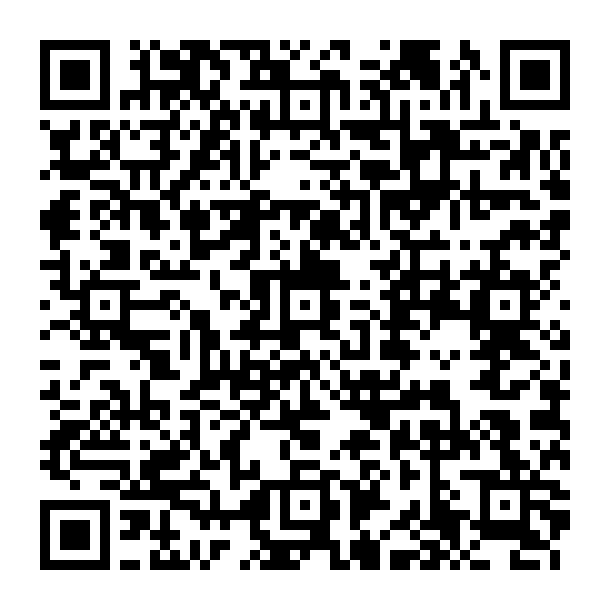
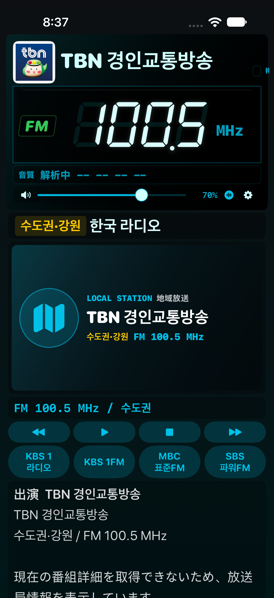

실기기 확인용 시험 빌드

iOS 17.0 이상. SideStore에서 서명해 설치합니다. 기존 앱을 삭제하지 않고 같은 Apple 계정으로 업데이트하세요.
안드로이드 최신판의 한국 방송 주파수·선국 순서·제외 목록(26개 활성 채널), 공식 재생 주소와 편성표·사진·로고를 반영했습니다. 한국 방송이 모두 시작되지 않던 재생 헤더 오류를 수정했습니다. NET38 앨범 이미지 검증과 NAS 내장 시간 가사, Ogg·Opus·WMA 재생을 추가했습니다.
기존 아이폰 배치·세그먼트·게인 계산과 Build 92의 잡음 수정은 유지합니다. 일본 라디오와 기존 NAS 네이티브 형식의 재생 경로는 그대로입니다. 추가 NAS 형식은 최대 512 MiB 파일을 먼저 내려받아 재생합니다.

실제 iPhone 시뮬레이터 캡처입니다. 방송 편성 내용은 촬영 시각에 따라 달라집니다.
검증 범위: 카탈로그·편성표·게인·가사·이미지 검증, iOS 빌드와 네이티브 재생 테스트. 사용 중인 iOS 26.7.1 실기기에서의 소리·Bluetooth·NAS 서버·SideStore 설치는 별도 확인이 필요합니다. Android 전용 루팅·하드웨어 키·APK 설치 기능은 포함하지 않습니다.
서울극동방송(106.9)은 국내 PC에서 공식 음원 수신을 확인했지만 미국 빌드 서버에서는 포트 연결이 시간 초과돼 라이브 검증을 하지 못했습니다. 국내 수신 음원 조각의 iOS 디코딩 검사와 라이브 접속 검사를 구분합니다. 아이폰에서 이 채널의 재생 확인이 필요합니다.
SHA-256e196a534ac6450112a4f81479c106857ac6bebed3be7d98bae3cfbcaa3b73a89